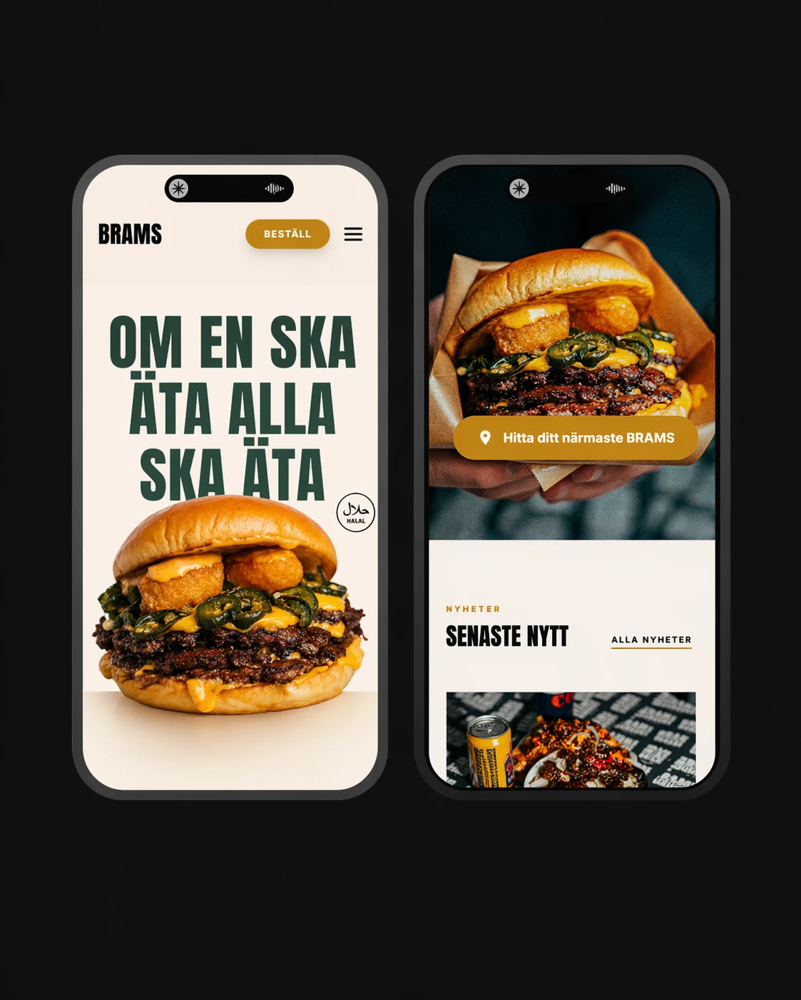
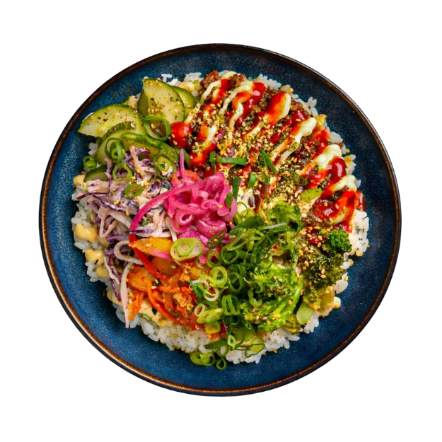

Servicios.
Cuatro líneas de trabajo, todas pensadas para restaurantes en España. Combinables a vuestra medida.
Redes sociales
Instagram, TikTok y Facebook completos — grabación, publicación, anuncios y resultados.
Desde 300 €/mes

Diseño web
Webs rápidas, móviles y optimizadas para SEO y reservas.
Desde 49 €/mes

Fotografía gastronómica
Imágenes que abren el apetito — iluminadas en vuestro propio local.
Desde 300 €/sesión

Google y publicidad
Más comensales desde Google — Maps, Business Profile y campañas Meta.
Desde 299 €/mes
Tu Restaurante
Competidor #1
Competidor #2
Competidor #3